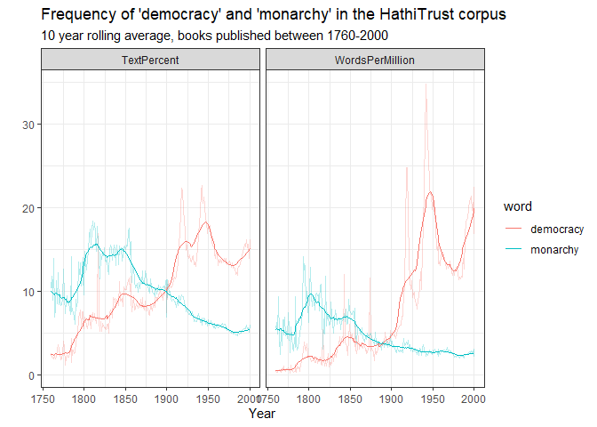
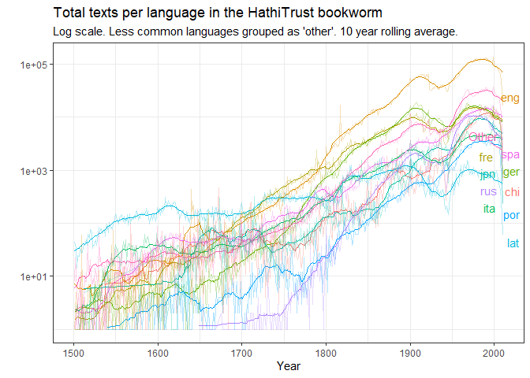

This package allows you to interact with various free data resources made available by the Hathi Trust digital library, including the Hathi Trust Bookworm, a tool similar to the Google ngram viewer and the Hathi Trust Workset Builder 2.0. It also allows you to download and process the Hathi Trust Extracted Features files, which contain per-page word counts and part-of-speech information for over 15 million digitised volumes, including many of those originally digitised by Google for its Google Books project.
Installation
This package is not yet on CRAN. Install from GitHub as follows:
remotes::install("xmarquez/hathiTools")Downloading word frequencies
The simplest task to use the package for is to download word frequencies from the Hathi Trust Bookworm:
library(hathiTools)
library(tidyverse)
#> -- Attaching packages --------------------------------------- tidyverse 1.3.1 --
#> v ggplot2 3.3.5 v purrr 0.3.4
#> v tibble 3.1.4 v dplyr 1.0.7
#> v tidyr 1.1.3 v stringr 1.4.0
#> v readr 2.0.1 v forcats 0.5.1
#> -- Conflicts ------------------------------------------ tidyverse_conflicts() --
#> x dplyr::filter() masks stats::filter()
#> x dplyr::lag() masks stats::lag()
result <- query_bookworm(word = c("democracy", "monarchy"), lims = c(1760, 2000), counttype = c("WordsPerMillion", "TextPercent"))
result
#> # A tibble: 964 x 4
#> word date_year value counttype
#> <chr> <int> <dbl> <chr>
#> 1 democracy 1760 0.382 WordsPerMillion
#> 2 democracy 1760 2.50 TextPercent
#> 3 democracy 1761 0.300 WordsPerMillion
#> 4 democracy 1761 2.13 TextPercent
#> 5 democracy 1762 0.352 WordsPerMillion
#> 6 democracy 1762 2.00 TextPercent
#> 7 democracy 1763 0.488 WordsPerMillion
#> 8 democracy 1763 1.94 TextPercent
#> 9 democracy 1764 0.663 WordsPerMillion
#> 10 democracy 1764 2.37 TextPercent
#> # ... with 954 more rows
result %>%
group_by(word, counttype) %>%
mutate(rolling_avg = slider::slide_dbl(value, mean, .before = 10, .after = 10)) %>%
ggplot(aes(x = date_year, color = word)) +
geom_line(aes(y = value), alpha = 0.3) +
geom_line(aes(x = date_year, y = rolling_avg)) +
facet_wrap(~counttype) +
labs(x = "Year", y = "", subtitle = "10 year rolling average, books published between 1760-2000",
title = "Frequency of 'democracy' and 'monarchy' in the HathiTrust corpus") +
theme_bw()
There are more than 13 million texts in the bookworm database.
total_texts <- query_bookworm(counttype = c("TotalTexts"), groups = c("date_year", "language"),
lims = c(0,2020))
total_texts %>%
summarise(value = sum(value))
#> # A tibble: 1 x 1
#> value
#> <int>
#> 1 13786170
library(ggrepel)
total_texts %>%
filter(date_year > 1500, date_year < 2001) %>%
mutate(language = fct_lump_n(language, 10, w = value)) %>%
group_by(date_year, language) %>%
summarise(value = sum(value)) %>%
group_by(language) %>%
mutate(label = ifelse(date_year == max(date_year), as.character(language), NA_character_)) %>%
group_by(language) %>%
mutate(rolling_avg = slider::slide_dbl(value, mean, .before = 10, .after = 10)) %>%
ggplot() +
geom_line(aes(x = date_year, y = rolling_avg, color = language), show.legend = FALSE) +
geom_line(aes(x = date_year, y = value, color = language), show.legend = FALSE, alpha = 0.3) +
geom_text_repel(aes(x = date_year, y = value, label = label, color = language), show.legend = FALSE) +
scale_y_log10() +
theme_bw() +
labs(title = "Total texts per language in the HathiTrust bookworm",
subtitle = "Log scale. Less common languages grouped as 'other'. 10 year rolling average.",
x = "Year", y = "")
#> `summarise()` has grouped output by 'date_year'. You can override using the `.groups` argument.
See the article “Using the Hathi Bookworm” for more on how to query the bookworm to get word frequencies grouped by particular fields and/or limited to specific categories.
Creating Worksets of Hathi Trust IDs
We can also create worksets of Hathi Trust IDs for volumes in the digital library that meet specific criteria, such as all volumes that mention “liberal” and “democracy” in the same page, or all volumes with by Alexis de Tocqueville in the “author” field.
result2 <- workset_builder("liberal democracy", volumes_only = FALSE)
result2
#> # A tibble: 6,193 x 2
#> htid id
#> <chr> <chr>
#> 1 aeu.ark:/13960/t05x3k82c aeu.ark:/13960/t05x3k82c.page-000075
#> 2 aeu.ark:/13960/t6pz5zs5h aeu.ark:/13960/t6pz5zs5h.page-000251
#> 3 aeu.ark:/13960/t7pn9qp4g aeu.ark:/13960/t7pn9qp4g.page-000394
#> 4 aeu.ark:/13960/t8qc19m2f aeu.ark:/13960/t8qc19m2f.page-000222
#> 5 chi.090309143 chi.090309143.page-000227
#> 6 chi.096292271 chi.096292271.page-000333
#> 7 chi.096292271 chi.096292271.page-000364
#> 8 chi.096292336 chi.096292336.page-000337
#> 9 chi.096292336 chi.096292336.page-000368
#> 10 chi.101607416 chi.101607416.page-001182
#> # ... with 6,183 more rows
result3 <- workset_builder(name = "Alexis de Tocqueville")
result3
#> # A tibble: 417 x 2
#> htid n
#> <chr> <int>
#> 1 aeu.ark:/13960/t00z8277t 506
#> 2 aeu.ark:/13960/t0ms4jd0t 419
#> 3 aeu.ark:/13960/t0wq0sh3s 455
#> 4 aeu.ark:/13960/t0wq0sh9p 445
#> 5 aeu.ark:/13960/t18k8252g 386
#> 6 aeu.ark:/13960/t23b7448p 649
#> 7 aeu.ark:/13960/t2h717j0v 607
#> 8 aeu.ark:/13960/t2k65c727 543
#> 9 aeu.ark:/13960/t3qv43c3w 516
#> 10 aeu.ark:/13960/t6252fd09 382
#> # ... with 407 more rowsWe can browse these volumes interactively in the Hathi Trust website:
browse_htids(result2)See the article “Topic Models Using Hathi Extracted Features” for more on creating and using with worksets for specific analysis purposes.
Downloading extracted feature files for specific Hathi Trust volumes
We can download the Extracted Features file associated with any of these HathiTrust IDs:
tmp <- tempdir()
extracted_features <- get_hathi_counts(result3$htid[2], dir = tmp)
extracted_features
#> # A tibble: 71,102 x 6
#> htid token POS count section page
#> <chr> <chr> <chr> <dbl> <chr> <dbl>
#> 1 aeu.ark:/13960/t0ms4jd0t II NNP 1 body 1
#> 2 aeu.ark:/13960/t0ms4jd0t `` `` 2 body 1
#> 3 aeu.ark:/13960/t0ms4jd0t * SYM 2 body 1
#> 4 aeu.ark:/13960/t0ms4jd0t 23 CD 1 body 1
#> 5 aeu.ark:/13960/t0ms4jd0t % NN 4 body 1
#> 6 aeu.ark:/13960/t0ms4jd0t n NN 1 body 1
#> 7 aeu.ark:/13960/t0ms4jd0t . . 2 body 1
#> 8 aeu.ark:/13960/t0ms4jd0t 9 CD 1 body 1
#> 9 aeu.ark:/13960/t0ms4jd0t < JJR 1 body 1
#> 10 aeu.ark:/13960/t0ms4jd0t U NNP 1 body 1
#> # ... with 71,092 more rowsAnd we can extract the metadata for any of them as well:
meta <- get_hathi_meta(result3$htid[2], dir = tmp)
meta
#> # A tibble: 30 x 3
#> field value htid
#> <chr> <chr> <chr>
#> 1 schemaVersion https://schemas.hathitrust.org/EF_Schema_Met~ aeu.ark:/13960/t~
#> 2 id http://hdl.handle.net/2027/aeu.ark:/13960/t0~ aeu.ark:/13960/t~
#> 3 type DataFeedItem aeu.ark:/13960/t~
#> 4 type Book aeu.ark:/13960/t~
#> 5 dateCreated 20200209 aeu.ark:/13960/t~
#> 6 title De la démocratie en Amérique aeu.ark:/13960/t~
#> 7 contributor http://www.viaf.org/viaf/66474207 aeu.ark:/13960/t~
#> 8 contributor http://id.loc.gov/ontologies/bibframe/Person aeu.ark:/13960/t~
#> 9 contributor Tocqueville, Alexis de, 1805-1859. aeu.ark:/13960/t~
#> 10 pubDate 1848 aeu.ark:/13960/t~
#> # ... with 20 more rowsWe can also get the metadata for many or all of these books at the same time:
meta <- get_workset_meta(result3[1:10, ], metadata_dir = tmp)
#> Getting download key...
#> Downloading metadata for 10 volumes. This might take some time.
#> Rows: 10 Columns: 36
#> -- Column specification --------------------------------------------------------
#> Delimiter: ","
#> chr (20): htBibUrl, volumeIdentifier, rightsAttributes, title, genre, pubPl...
#> dbl (3): schemaVersion, pubDate, hathitrustRecordNumber
#> lgl (11): sourceInstitutionRecordNumber, enumerationChronology, governmentD...
#> dttm (2): dateCreated, lastUpdateDate
#>
#> i Use `spec()` to retrieve the full column specification for this data.
#> i Specify the column types or set `show_col_types = FALSE` to quiet this message.
meta
#> # A tibble: 10 x 36
#> htBibUrl schemaVersion volumeIdentifier rightsAttributes title genre pubDate
#> <chr> <dbl> <chr> <chr> <chr> <chr> <dbl>
#> 1 http://c~ 1.3 aeu.ark:/13960/~ pd De l~ "[\"~ 1850
#> 2 http://c~ 1.3 aeu.ark:/13960/~ pd De l~ "[\"~ 1848
#> 3 http://c~ 1.3 aeu.ark:/13960/~ pd Demo~ "[\"~ 1899
#> 4 http://c~ 1.3 aeu.ark:/13960/~ pd De l~ "[\"~ 1848
#> 5 http://c~ 1.3 aeu.ark:/13960/~ pdus Demo~ "[\"~ 1889
#> 6 http://c~ 1.3 aeu.ark:/13960/~ pd Demo~ "[\"~ 1898
#> 7 http://c~ 1.3 aeu.ark:/13960/~ pd Demo~ "[\"~ 1863
#> 8 http://c~ 1.3 aeu.ark:/13960/~ pd De l~ "[\"~ 1850
#> 9 http://c~ 1.3 aeu.ark:/13960/~ pd Demo~ "[\"~ 1838
#> 10 http://c~ 1.3 aeu.ark:/13960/~ pd De l~ "[\"~ 1848
#> # ... with 29 more variables: pubPlace <chr>, typeOfResource <chr>,
#> # bibliographicFormat <chr>, language <chr>, dateCreated <dttm>,
#> # lastUpdateDate <dttm>, imprint <chr>, isbn <chr>, issn <chr>, oclc <chr>,
#> # lccn <chr>, classification <chr>, handleUrl <chr>,
#> # hathitrustRecordNumber <dbl>, sourceInstitutionRecordNumber <lgl>,
#> # sourceInstitution <chr>, accessProfile <chr>, enumerationChronology <lgl>,
#> # governmentDocument <lgl>, names <chr>, issuance <chr>, ...One can also turn a workset into a list of htids for downloading their extracted features via rsync:
tmp <- tempfile()
htid_to_rsync(result3$htid[1:10], tmp)
#> Use rsync -av --files-from C:\Users\marquexa\AppData\Local\Temp\RtmpCEOgEB\file60d0600439d3 data.analytics.hathitrust.org::features-2020.03/ hathi-ef/ to download EF files to hathi-ef directoryThere’s a convenience function that will attempt to do this for you in one command.
rsync_from_hathi(head(result3))This requires having rsync installed; see the article “Topic Models Using Hathi Extracted Features” for more on rsyncing large numbers of Hathi Trust JSON extracted features files and caching them to other formats for analysis.
It is also possible to download the big “hathifile” to get basic metadata for ALL of the texts in the Hathi Trust digital library; this is useful for selecting random samples.